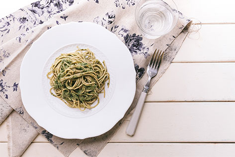

～セリを使ったジェノベーゼ風パスタ～
レシピを見る
ジェノベーゼ風パスタと言えば大葉で作るパスタ、バジルで作るパスタ
いろいろありますがどれもおいしいですよね。
今回は一風変わった、「セリ」を使ったパスタご紹介します。
セリは他の食材にはない、さわやかでほろ苦い独特の風味を味わえます。
とはいえ、大葉やバジルほど強い風味はなく、控えめに主張してくれます。
物足りない方はお皿に直接彩りとして乗せても、ソースにさらにセリを加えてもいいかもしれませんね。
ぜひとも一味違ったジェノベーゼ風パスタ、ご賞味ください。